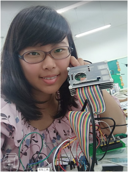
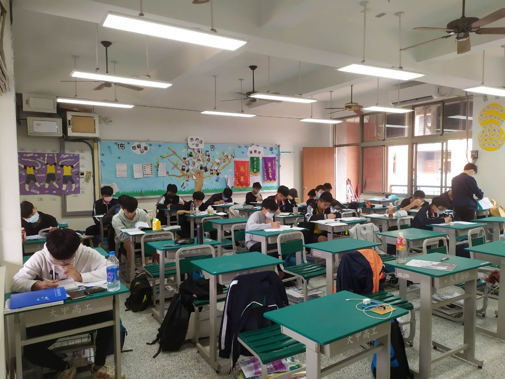
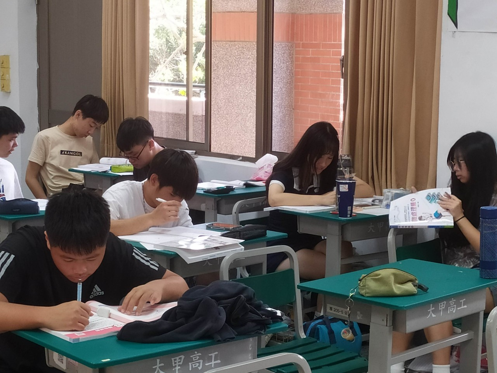
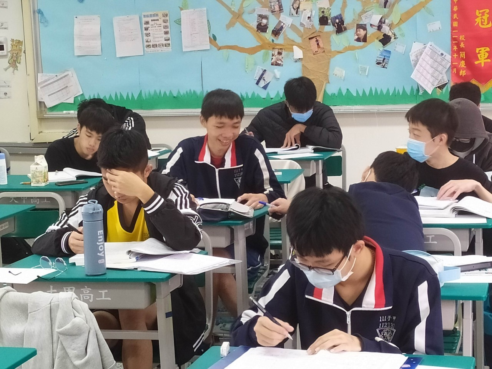
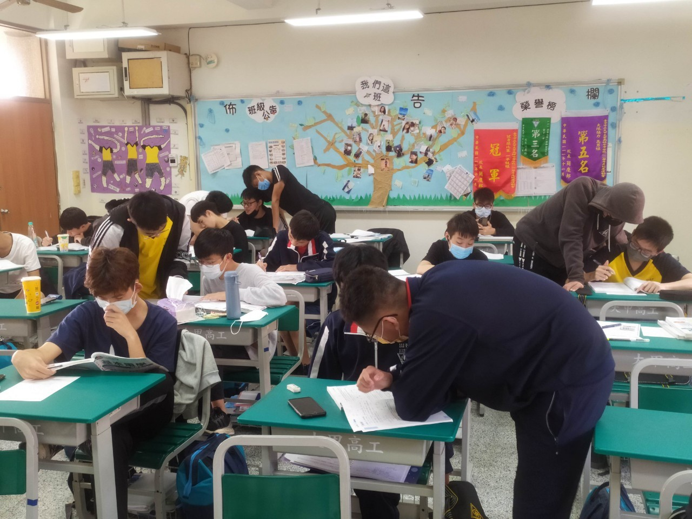
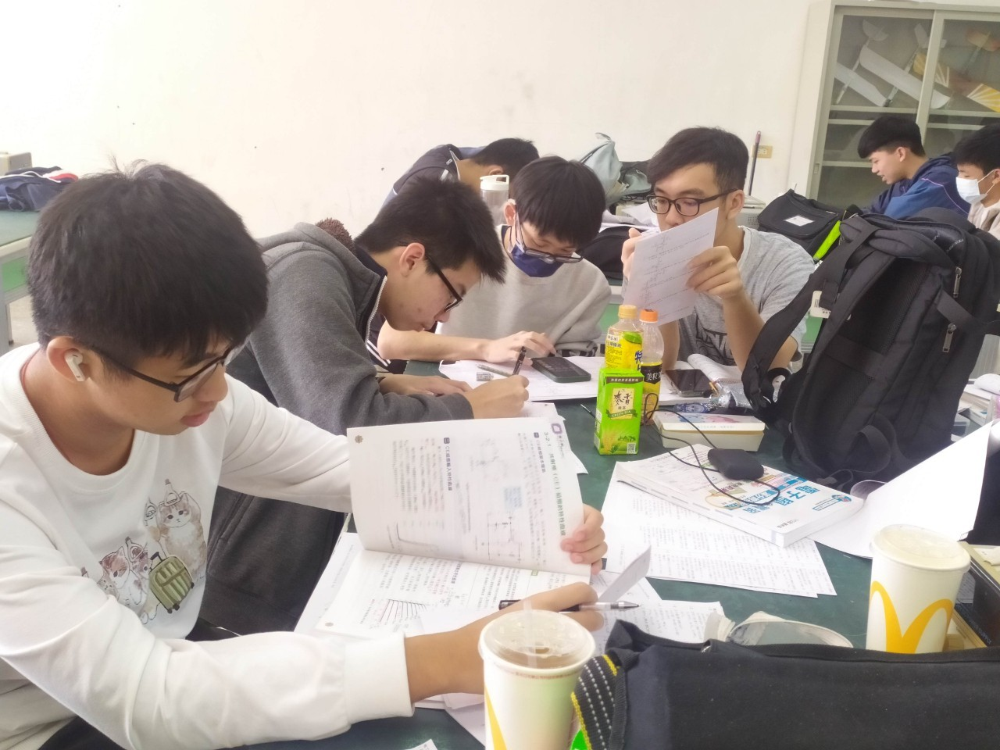
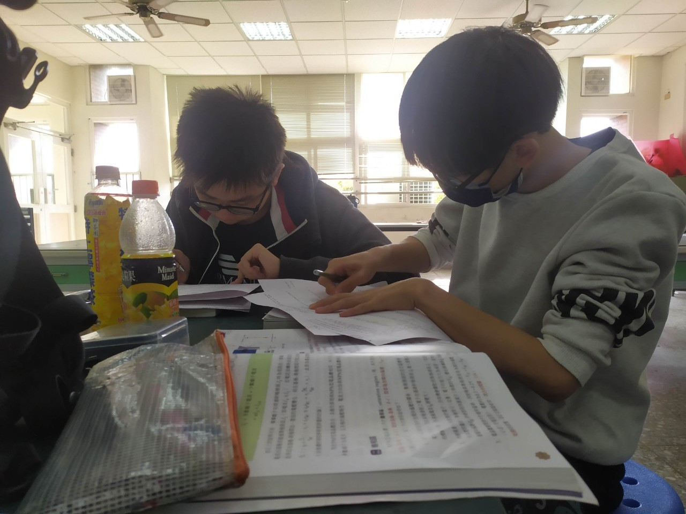

班級事務與導師介紹
| 姓名 | 張朧勻 |
|---|---|
| 專長 | 電子學、基本電學 |
| 教學與成效 |
|
| 班級經營理念 | 每天開開心心上學，平平安安回家。 |
| 教學理念 | 盡己所能，讓沒有錢補習的同學不必補習，在學校學就足夠充實了。 |
學習紀錄照片
假日讀書與晚自習






實習實作


日常生活點點滴滴


班級競賽
這裡是班級競賽的內容。
學習成果
這裡是學習成果的內容。